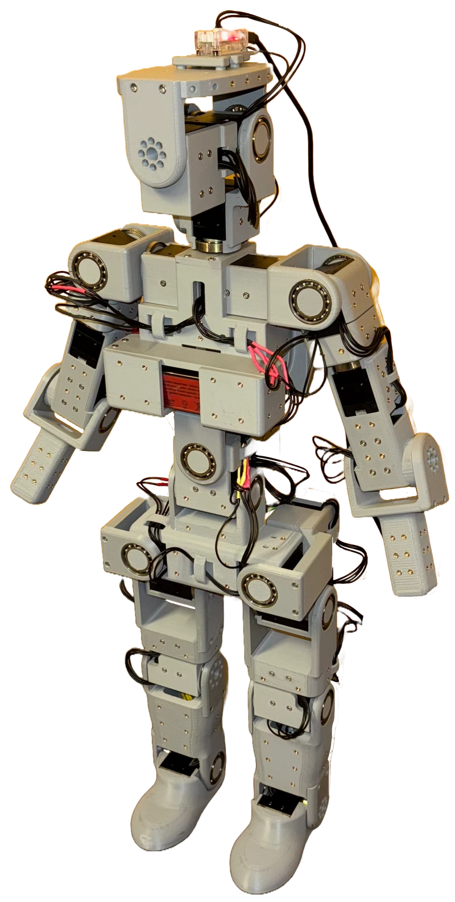
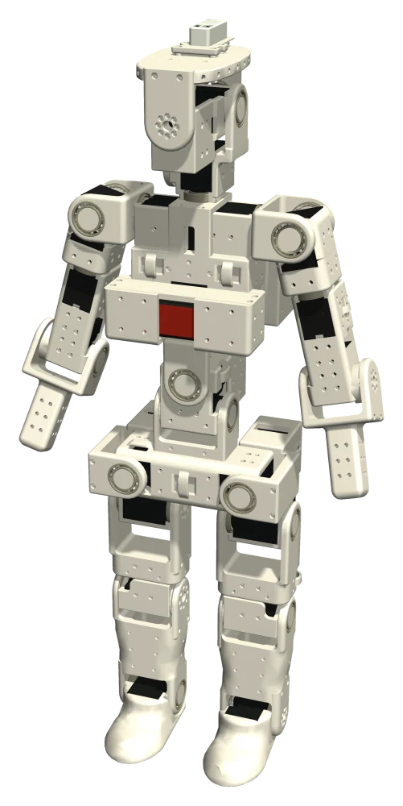
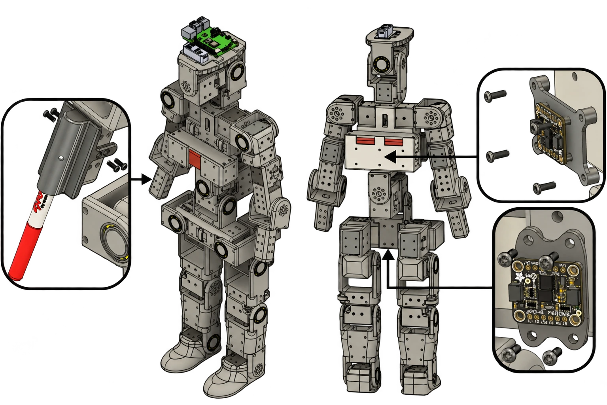
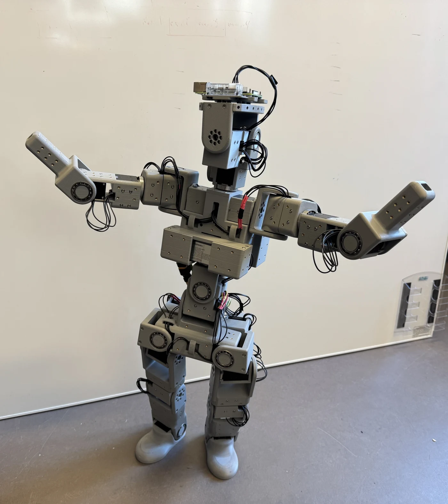
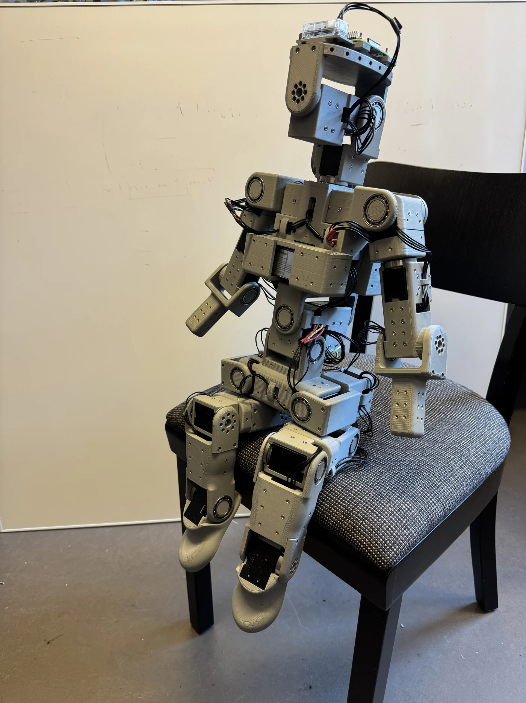
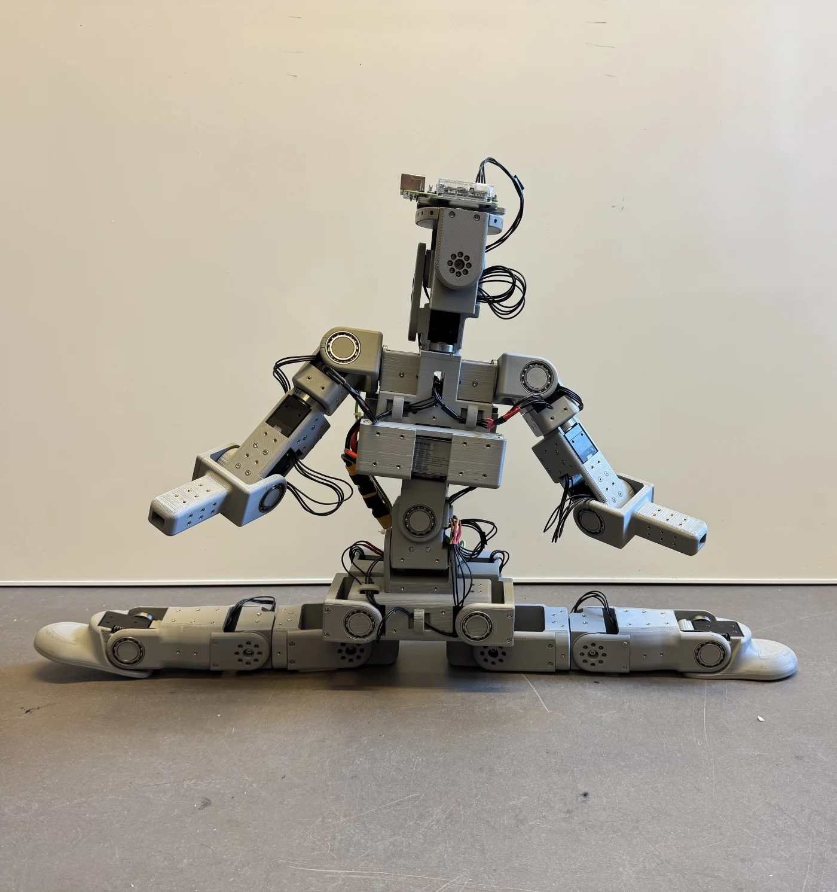

Velocity-conditioned walking
The policy controls all 24 joints. Hardware tests use forward walking and combined forward–turning commands.
| Velocity command | Range |
|---|---|
| Forward (x) | −0.20 to 0.35 m/s |
| Sideways (y) | −0.20 to 0.20 m/s |
| Yaw | −0.20 to 0.20 rad/s |
An Open-Source and
Customizable Humanoid Robot
A 68 cm humanoid built from 3D-printed parts and Dynamixel actuators, with open CAD files and control software.

Actuated joints
Height
Weight
Open hardware.
Open software.

Could not load the 3D view. Download the model.
SWENOID is a 24-joint humanoid developed at KTH for locomotion and whole-body control. Its CAD files, simulation model, and control software are open source.
We train walking and motion-tracking policies in simulation and run them on the robot without further training. Hardware experiments include walking, drawing, dancing, and live upper-body imitation.

Mechanical assembly in STEP format.
Joint axes and measured part masses, added with CADConversion.
MuJoCo simulation model in MJCF format.
PPO training with mjlab and RSL-RL.
Policies run on the robot without further training.
The policy controls all 24 joints. Hardware tests use forward walking and combined forward–turning commands.
| Velocity command | Range |
|---|---|
| Forward (x) | −0.20 to 0.35 m/s |
| Sideways (y) | −0.20 to 0.20 m/s |
| Yaw | −0.20 to 0.20 rad/s |
A pen mounted on the forearm follows an 80 mm circle using inverse kinematics. Ten trials produced ellipses with the dimensions below.
A policy follows a 14.8-second dance sequence using reference joint positions and velocities.
MediaPipe estimates a person’s pose from a webcam. GMR retargets the upper-body motion to SWENOID, and a tracking policy controls the robot. The lower-body reference stays fixed.



MuJoCo models, policy training, motion retargeting, and robot control.
MIT-licensed STEP assembly. Print exports and assembly documentation are in progress.
STEP-to-MJCF conversion with joint and mass annotations.
@misc{orrje_swenoid,
title = {{SWENOID}: An Open-Source and Customizable Humanoid Robot},
author = {Orrje, Martin and Eriksson, Arvid and Broman, David},
note = {Manuscript}
}